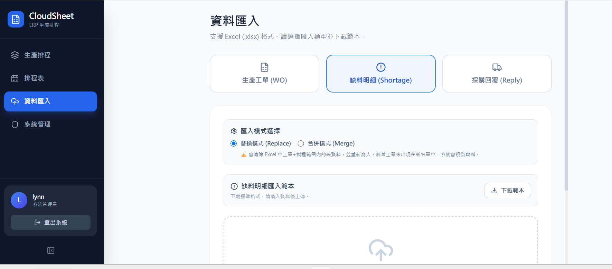
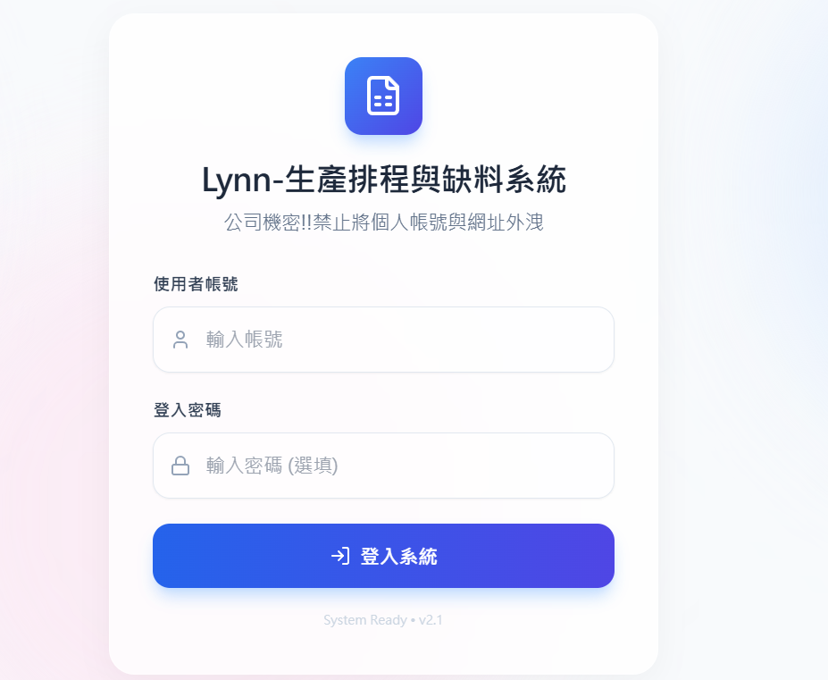
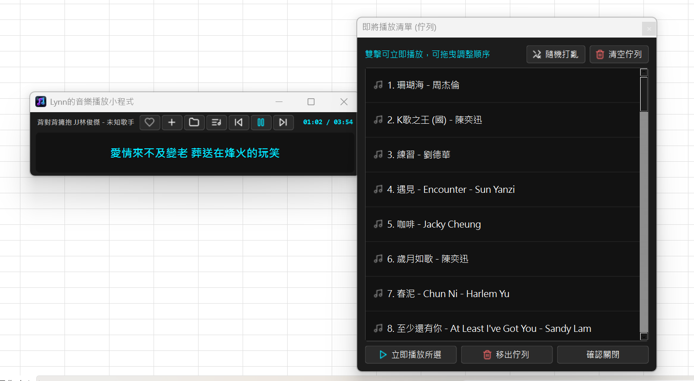

涵蓋 LINE 整合雲端服務、企業級 ERP 排程系統、Python 桌面客戶端與 3D 互動運算。
專為寵物飼主打造的現代化毛孩平台。整合 LINE Login (OAuth 2.0) 第三方會員快速認證授權機制，實現無痛登入與使用者資料管理；後端容器化並部署於 Google Cloud Run，具備無伺服器（Serverless）高彈性擴展與極低冷啟動延遲特性。
專為製造業排程人員打造的現代化雲端協作系統。前端以 React 18 + Tailwind 打造雙向排程看板，後端運用 Google Apps Script 串接 Sheets 作為零維護雲端資料庫，支援 Excel 資料匯入（覆蓋/合併）、工單（WO）即時追蹤與缺料警報機制。


基於 Python PyQt6 與 libVLC 核心打造的極簡桌面音樂播放軟體。實作 QThread 多執行緒背景音訊串流抓取、lrclib 動態歌詞精確模糊對齊，具備拖曳佇列排序、智慧推薦電台演算法與自訂歌單 JSON 本機持久化功能。

以 Three.js / WebGL 建構的 3D 實時擬真夾娃娃機。實作動態攝影機追蹤視角、三軸爪夾精確控制與物體碰撞判定，兼顧電腦與行動裝置 60fps 渲染流暢度。
以職場日常為題材的趣味拉霸遊戲。結合 CSS 關鍵影格動態演算與 JavaScript 滾輪隨機權重邏輯，實作拉桿擬真回彈微互動與遊戲結算機制。
專為行動裝置調校的音樂串流播放器。運用 Web Audio API 實作播放狀態控制、時間軸無縫跳轉與播放清單管理，全介面支援手機觸控手勢流暢操作。